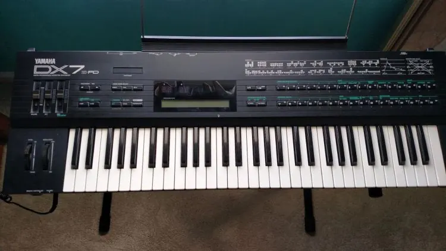

記得2008年轟動全台的《海角七號》嗎？如果你看過這部電影，對它的配樂一定也有印象。這次強力邀請到的專訪貴賓，就是 2008 年金馬獎最佳原創電影音樂的得主，呂聖斐老師。除了配樂家以外，他同時也具有流行音樂編曲家、作曲家、演唱會樂手及音樂總監等多重身份，更擔任過張惠妹、蔡健雅、江蕙等多位歌手的巡迴演唱會音樂總監。不管在音樂界裡扮演什麼角色，他都能夠招架，讓導演或藝人們都想持續找他合作。你是否跟小編一樣好奇，到底是什麼樣的音樂養成與特質造就今天的呂聖斐呢？一個半小時的專訪中，他和我們分享了他的故事與理念，也不吝提供了身為職業樂手及配樂家的關鍵秘訣。一起來聽故事吧！
————————————————————————————————————————–
每個人在決定踏上音樂這條路上前，應該都會有深深影響自己的音樂人或樂團。而呂聖斐老師從小在接觸音樂的過程中，可以說是深受日本的影響。「當初想要以音樂當工作的原因跟 T-sqaure 和 Casiopea（日本 Jazz Fusion 樂團）脫離不了關係。看到他們的演奏影片，台上的演奏者跟觀眾都很享受在音樂之中，於是我暗暗地許下了一個心願，希望自己將來也能把音樂當作興趣以及工作。」
除了流行音樂與電影配樂以外，呂聖斐老師至今持續與他的樂團，《TFP無限融合》演出，你可以從中看到呂聖斐老師對 Fusion Jazz（融合爵士）的熱愛。Fusion Jazz 是混合了其他風格的爵士樂，所以各種曲風都難不倒他！
呂聖斐老師將和自己的樂團在今年九月前往東京錄製第八張專輯，再送去英國或美國進行混音，嘗試新的製作方式。「小時候因為YAMAHA的關係有跟日本人工作過，他們的音響師和燈光師都會跟我們要套譜去看，還滿不可思議。日本人的音樂基礎教育做得不錯，演出的幕後團隊的音樂基礎水準素養是很夠的。也很喜歡他們嚴謹的精神。我們會選擇去日本錄音也是有這個原因，想要學習他們在做這件事情的態度跟方式。」（編按:在台灣通常只會拿 Stage Map 以及燈光指令表，從沒聽過 Staff 跟樂手拿樂譜，因此這是老師覺得日本幕後團隊不可思議的地方。）
而選擇去美國混音的原因則是因為較偏好美式混音所帶出來的感覺。「日本的混音總感覺整體音量過大。我喜歡成品多留一點自然的 headroom。或許跟地域性也有關。他們（日本）有很多新的技術跟刺激性的需求，感覺上美國的比較放鬆。」不論問到什麼問題，他都很有組織性的回答你選擇這件事的原因。能夠在音樂界跨足如此多元的角色，對於電腦技術和聲音都相當敏銳，究竟是什麼開啟他的音樂之路的呢？
從童年接觸電子琴到成為職業電影配樂和演唱會音樂總監
呂聖斐老師小時候學的第一個樂器，是 YAMAHA 的電子琴 (Electone)。從小就時常在電子琴比賽中獲得好成績。而學習電子琴對於他後續的音樂工作也有很大的幫助。「電子琴就是右手左手各司其職，有bass有和弦有旋律，還有節奏器，一個基本的編曲架構就有了。」也因此，他很早就接觸到編曲、流行音樂、和弦以及不同樂器的音色。有別於大部分的樂手，常常是以搖滾開始，呂聖斐老師則是以一人器樂演奏的學習方式切入，最初也到現在最有熱情的樂風反而是融合爵士。

YAMAHA DX7 II (圖片取材自網路)後來在他小六的時候，為了要參加 YAMAHA 兒童創作曲比賽，擁有了人生第一台電子合成器(Synthesizer)，YAMAHA DX7 II。「有了合成器之就又開啟了另一個思維，開始玩音色，接觸 MIDI，接觸電腦音樂。」而這些早期的經驗與興趣建構了他在編曲與製作的專長。「所以後來我入行的方式是做編曲、作曲，然後做演出、演唱會，慢慢做到了 band leader 和音樂總監。很幸運地在音樂的各個層面的工作中都有還不錯的成績。在做音樂上面我是滿感恩的，知道自己比很多人幸運很多，遇到很多貴人、前輩。現在43歲，回頭想，我當年20歲，其實當年給我機會的製作人、前輩們也不過是35歲上下，有著對音樂滿滿的熱情以及肯給年輕人機會的大氣，為台灣流行音樂市場的榮景打下很好的基礎!」
光是今年，呂聖斐老師就已受邀擔任四位不同藝人大型巡迴演唱會音樂總監，包括合作超過十年的蔡健雅、黃小琥、楊丞琳、以及張韶涵。不論是他在鍵盤的彈奏或整體演唱會的音樂設計都備受好評，藝人們也會特別指定呂聖斐老師擔任該演唱會的鍵盤手，因此時常都是同時一手扛起音樂總監及鍵盤手兩個重大角色。然而，呂聖斐老師說現在想要慢慢退到幕後，專注於調整演唱會整體的聲音給觀眾聽。「雖然我自己還是很愛彈琴，但現在想要坐到後面一點，或坐到更高的角度看會更清楚。我計劃慢慢退到後面，跟PA工程師一起調聲音給觀眾聽，等於是可以表達我即時混音的想法，把那個想要呈現的 balance 給聽眾聽。」當然除了這個原因以外，他其實也很希望將演唱會鍵盤手的舞台給更多年輕的樂手發揮。
台灣現在缺的是經驗的傳承和機會的流動：多給年輕人機會，引導他們找出自己的特色
前年無限融合樂團辦了一個體驗營，從架設器材、看譜、到演奏、編曲或是如何與一起工作樂手溝通…，當中的流程都讓學生們看，也讓他們提問。「我們的用意就是用自己樂團這幾年的經驗跟學員分享。這不一定會是最好的流程，但是我們想分享作法。因為台灣缺的是經驗的傳承，這種東西學校一定不會教。」目前台灣有越來越多流行音樂相關的課程跟系所，但現階段仍在前線實戰的表演者們時常因為工作的緣故，要去學校提供長期的教學和傳授目前的實務經驗分享，是比較困難的。因此類似這樣的體驗營或是研習營，雖然只是短期或一次性，但對許多學生來說是十分寶貴的學習機會跟刺激。「學校的流行音樂教學其實不好做。可是還是必須要有人做。必須要集思廣益，有更多的建教合作。」
未來隨著科技更發達，可能會有更多遠端課程教學或交流的機會。一直以來都很重視溝通的呂聖斐老師認為，音樂人們在運用科技之餘，還是不能忽略最基本的技術功夫，以及人與人之間的交流。「我覺得現在這個時代要更注重人的交流跟你的手上功夫。現在現成的sample音色那麼多，loop剪貼一下，透過創意就可以產生出還不錯的成品，但是樂手的技巧，你不練個十年二十年，是不會紮實的。人跟人之間的交流激盪而產生出音樂上的火花，也不是一個人閉門造車的製作方式能比擬的。」
讓音樂與實務技術傳承的方式有很多種，但是實際要執行其實不太容易。「現在台灣比較可惜的是，年輕人比較沒有太多實際操作的機會。我會希望看到以前那種長江後浪推前浪。前輩去做更上面的事情，或是做更重要的事情，或轉進不同領域都好。你有了這個基礎，去其他領域做其他事情，例如開發一對喇叭、開發一個跟聲音有關的技術，甚至是轉行做相關產業都有可能讓你的經驗得到更多昇華發揮，不見得一直待在同一個角色才是好的。」呂聖斐老師20年來接觸到各式各樣的音樂人，他發現大部分的音樂人都很單純。就算30幾40幾，都還很像小孩。或許是因為在娛樂圈常會接觸年輕人，反而忘記要做更上面的事情，如果能促進一個流動讓新的人進來，並傳授經驗給他，這才是健康的。而這也是他想慢慢轉至純粹音樂總監角色部分原因。
呂聖斐老師近年透過參與一些音樂相關的協會成立，促進跟政府之間的交流。「我們常常看到政府和民間的想法、美感落差非常大，但是只會在外面批評不是很有建設性的做法。最近與一些中生代音樂人採取比較積極的方法是，想辦法跟政府建立一個健康的管道溝通。怎麼用一個內行人的角度，用我們的專業來幫助政府作出對的決定。」如果有一個協會，代表的不是個人，是一批熟悉目前市場的音樂人，透過這個方式去協助政府產生一些改變。
「我相信有社會影響力的『文化人』 必須要理解自己同時也有更多的社會責任，要主動去產生正面的影響，而不是像自私的無良商人或政客只顧全自己。當你把專業美感跟正確資訊散播出去而改善環境的正面循環建立後，將來培養出的年輕人也才會是未來你能合作雇用的好人才。」呂聖斐老師指出，台灣現在的問題是領導階層老化跟上面有能力的人不願意放手。「我自己手腳很快，例如編一首歌六小時，給我學生可能要三天。但你若肯給他機會，在來回修改的過程中你才能傳承，他才能學到東西。所以我也奉勸年輕人如果有人給你這個機會然後打你的槍，不管是甚麼樣的結果，都是一個很好的經驗，要好好珍惜。」
主講過許多音樂講座和訓練營的呂聖斐老師深刻感受到重要領導階層因材施教的重要性。例如，鼓勵愛現的人收回來一點，讓他們學習去查知能否表現的時機。而對於比較沒有自信的人，他會反過來鼓勵他們放鬆然後多求表現的機會。「這也有點像我們在引導藝人。藝人就是異於常人，觀眾想要看的是你跟一般人不一樣在哪，這就是藝人特質，才是被喜歡、被崇拜最重要的原因。當你是一個老師、主管、領導者的角色，都必須要有這種因材施教的思維。」
有時候，音樂人在推動的事情，不見得是我們從螢光幕或各大媒體的報導上看得到的事。感謝呂聖斐老師與我們分享他的音樂歷程與傳承理念。秉持著這樣的音樂人社會責任與持續的行動，相信這些技術與精神已開始在接下來的音樂世代中逐漸生根，未來可能也會因過來人的傳承結合年輕的創意，在台灣的音樂界釀出新的火花。呂聖斐老師的專訪續集是關於身為職業樂手或配樂家的關鍵秘訣，喜歡彈奏樂器和配樂的你，千萬別錯過！